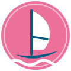

Materials of the five working groups in one format: read online, print or download the originals (PDF, DOCX, XLSX).

Sailing Teaching Methodology
Concept, lesson scenarios, adaptation to water types, cards for six countries.

Windsurfing Teaching Methodology
Five sessions, plan B, readiness criteria and reflection.

Safety & Risk Management
Safety pack, forms 00–11, policy, risk table and responsibility matrix.

Inclusion & Reflection
Inclusion guide, adaptations, organisations by country and two reflection booklets.

Ecological Responsibility
“Leave No Trace”, Zeeland practices and a comparison of camping locations.